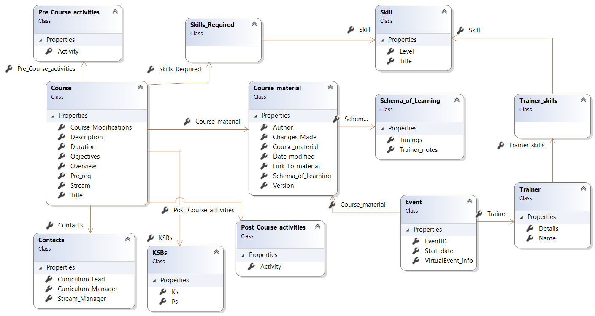

Improving How We Design, Create, and Publish Courseware
Main points
I want to highlight three systemic problems in how we design and publish courseware,
and the concrete fixes that will save time, costs, and improve quality.
Our courseware issues come from three places:
- Unclear production standards
- A weak design process
- A slow, nontechnical publication pipeline
The document outlines simple fixes:
- Clear slide standards
- SOL-first design
- An Agile publication workflow managed by people who understand the content
- Centralised storage and proper metadata so knowledge isn’t lost
Meeting structure
A. The problem (2 minutes)
- Slides are inconsistent and overloaded
- SOLs are an afterthought
- No technical review process
- Publication pipeline run by nontechnical staff
- Knowledge is scattered and lost amongst other publications
- The pipeline is tedious, slow, and not Agile.
B. The impact (1 minute)
- Trainers waste time rewriting
- Students get inconsistent experiences
- Courses drift away from the SOL
- Quality depends on who last touched the material
C. The solution (3 minutes)
- Clear slide standards
- SOL-first design
- Agile publication pipeline
- Centralised database and course metadata (authors, difficulties, reusable assets)
- Store all course information in a database for fast retrieval.
D. The ask (30 seconds)
I’m asking for support to pilot this improved workflow on one module.
If it works, we scale it.
1. Standards for courseware production
Purpose of a slide
- Define whether a slide is a teaching aid or reference material
- Limit text density: clear guidance on maximum lines/bullets per slide
- Use animation and graphics intentionally, not decoratively
- No code as screenshots — use real code snippets or GitHub links
- Provide links to trainer demos or prerecorded walkthroughs
2. Course design process
2.1 Start with the SOL (not as an afterthought)
- SOL must be part of the initial design, not something added later
- Use Excel-based SOLs for clarity and timing control
2.2 Research and preparation
- Check for existing material before writing new content
- Identify the correct SME to contact for deeper technical input
2.3 Designing the learning experience
- Define lecture length as part of the design
- Ensure labs drive the learning, not the other way around
- Decide how much learning can be shifted into labs to reduce slide load
3. Publication process
3.1 Current issues
- Pipeline is managed by people with no subject knowledge
- Curriculum managers & line managers
- Courseware team, publication team, scheduling
- The pipeline is tedious, slow, and not Agile
- We clearly have no review process ❌
3.2 Proposed improvements
- Create an Agile publication pipeline
- Potentially managed by trainers, not nontechnical staff
- SOLs should be Excel-based, not Word documents
- Host all courses on one website — eliminate courseware request emails
3.3 Course metadata and knowledge sharing
Each course should record:
- Change history
- Author name
- Skills required to teach the course
- Names of trainers who have delivered it
- Known difficulties and hard labs
- Shared knowledge, labs, demos, and reusable assets
3.4 Centralised storage
- Store all course information in a database for fast retrieval
